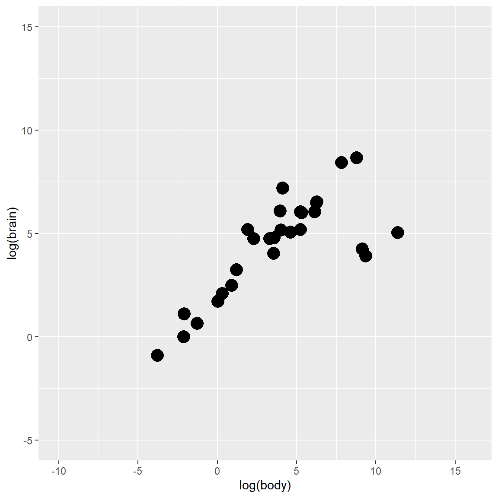
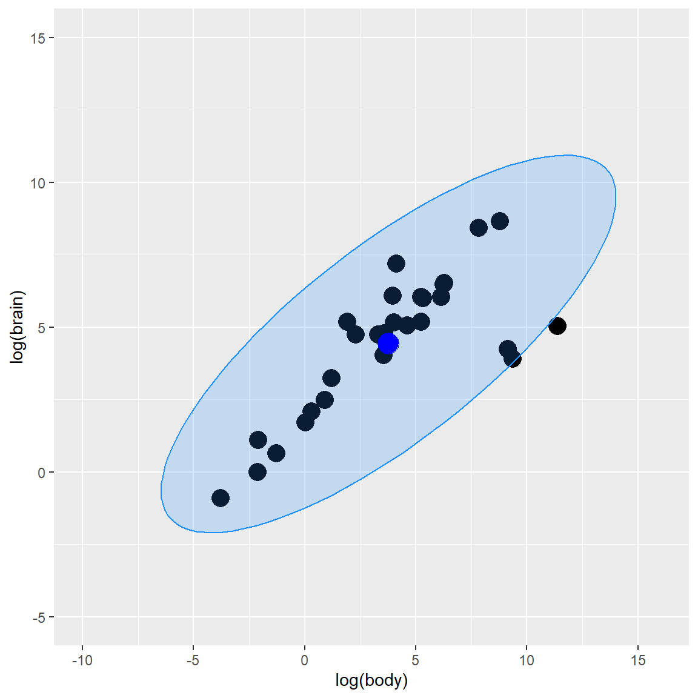
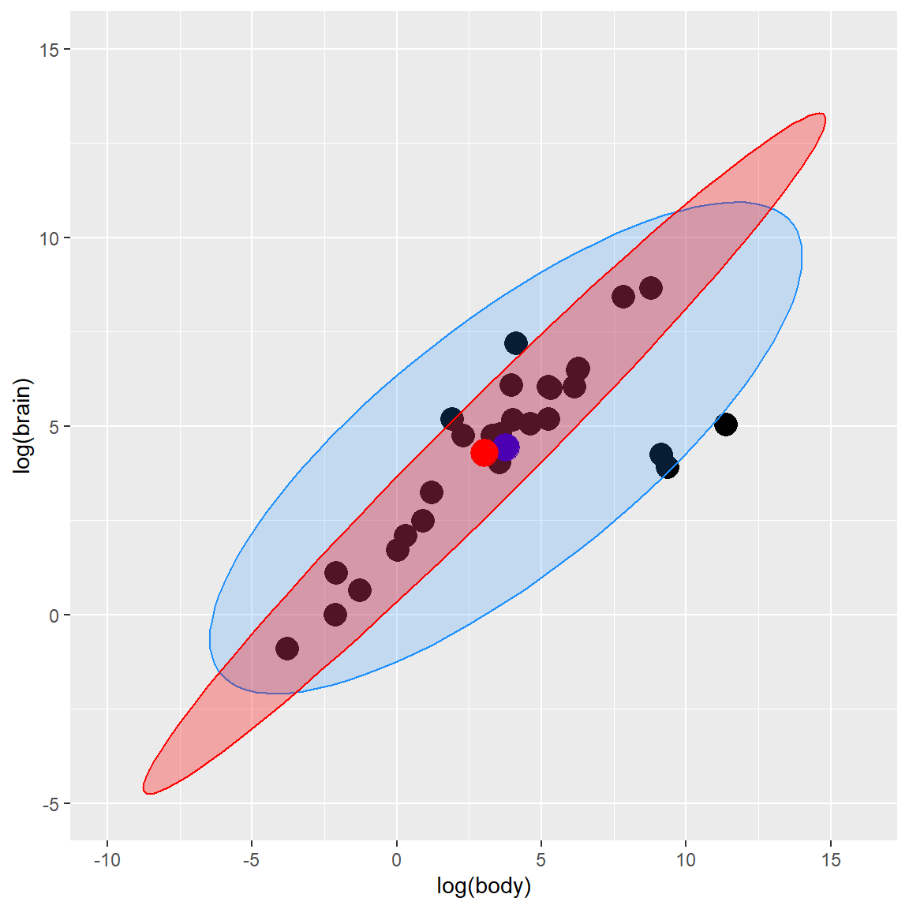
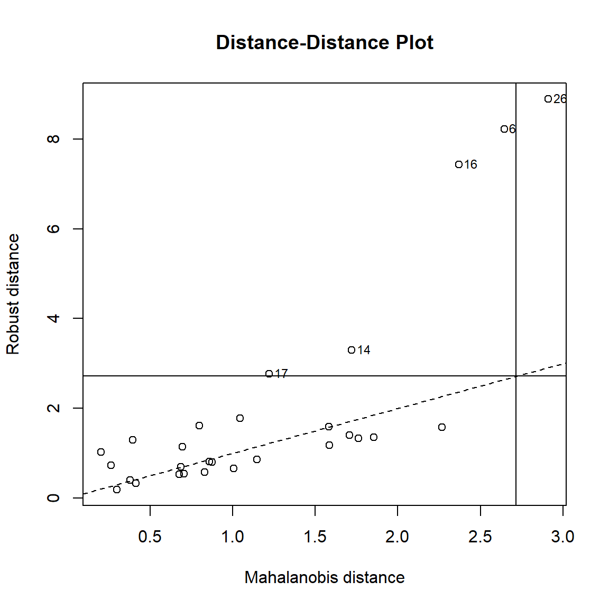

Figure 0.1: Outliers
In the last blog posts, I’ve discussed the outliers detection in regression part 3. In fact, outliers in regression is a special case of the multivariate outliers. Because regression has been used widely, I choose to make it as a special topic. Now, in this part I am going to discuss how we can better identify multivariate outlier or Outliers in higher dimensions.
I will still use a linear regression as an example, but will apply the outlier detection in a multivariate way.
Multivariate Statistics - Simultaneous observation and analysis of more than one outcome variable.
I will use Animals data from the MASS package in R for demonstration.
# Load library and pull out data
library(MASS)##
## Attaching package: 'MASS'## The following object is masked from 'package:dplyr':
##
## selectdata(Animals)
attach(Animals)
# check data structure.
head(Animals)## body brain
## Mountain beaver 1.35 8.1
## Cow 465.00 423.0
## Grey wolf 36.33 119.5
## Goat 27.66 115.0
## Guinea pig 1.04 5.5
## Dipliodocus 11700.00 50.0The variables for the demonstration are body weight and brain weight of Animals which are converted to its log form (to make highly skewed distributions less skewed)
# Log transformation.
Y <- data.frame(body = log(Animals$body),
brain = log(Animals$brain))
# Create Scatterplot
plot_fig <- ggplot(Y, aes(x = body, y = brain)) +
geom_point(size = 5) +
xlab("log(body)") +
ylab("log(brain)") +
ylim(-5, 15) +
scale_x_continuous(limits = c(-10, 16), breaks = seq(-15, 15, 5))
plot_fig
In the multivariate world, outliers can be defined as particularly influential observations.
An outlier is an observation which deviates so much from the other observations as to arouse suspicions that it was generated by a different mechanism.” D. M. Hawkins
Most multivariate outlier detection methods rely on the computation of some distance metric, and the observations greater than a certain threshold are considered outliers.
Importantly, outliers detection methods are meant to provide information to the researcher, rather than being an automatized procedure which mindless application is a substitute for thinking.
Again, outlier detection and handling is still a subjective process from researcher. It varies based on different research goals, perspectives, and theoretical frameworks.
Using the composite approach, multivariate outliers are obtained via the joint application of multiple outliers detection algorithms:
Among outlier detection methods, Cook’s distance and leverage are less common than the basic Mahalanobis distance, but still used. Cook’s distance estimates the variations in regression coefficients after removing each observation, one by one (Cook, 1977). Since Cook’s distance is in the metric of an F distribution with p and n-p degrees of freedom, the median point of the quantile distribution can be used as a cut-off (Bollen, 1985). A common approximation or heuristic is to use 4 divided by the numbers of observations, which usually corresponds to a lower threshold (i.e., more outliers are detected). This only works for Frequentist models. For Bayesian models, see pareto.
The reliability and approximate convergence of Bayesian models can be assessed using the estimates for the shape parameter \(k\) of the generalized Pareto distribution. If the estimated tail shape parameter k exceeds 0.5, the user should be warned, although in practice the authors of the loo package observed good performance for values of \(k\) up to 0.7 (the default threshold used by performance).
Mahalanobis distance (Mahalanobis, 1930) is often used for multivariate outliers detection as this distance takes into account the shape of the observations.
Mahalanobis (or generalized) distance for observation is the distance from this observation to the center, taking into account the covariance matrix.
Figure 2.1: Outliers
Classical Mahalanobis distances: sample mean as estimate for location and sample covariance matrix as estimate for scatter.
To detect multivariate outliers the Mahalanobis distance is compared with a cut-off value, which is derived from the chi-square distribution
In two dimensions we can construct corresponding 97.5% tolerance ellipsoid, which is defined by those observations whose Mahalanobis distance does not exceed the cut-off value.
The default threshold is often arbitrarily set to some deviation (in terms of SD or MAD) from the mean (or median) of the Mahalanobis distance. However, as the Mahalanobis distance can be approximated by a Chi-squared distribution (Rousseeuw & Van Zomeren, 1990), we can use the alpha quantile of the chi-square distribution with k degrees of freedom (\(k\) being the number of columns).
By default, the alpha threshold is set to 0.025 (corresponding to the 2.5% most extreme observations; Cabana, 2019). This criterion is a natural extension of the median plus or minus a coefficient times the MAD method (Leys et al., 2013).
Y_center <- colMeans(Y)
Y_cov <- cov(Y)
Y_radius <- sqrt(qchisq(0.975, df = ncol(Y)))
library(car)## Loading required package: carData##
## Attaching package: 'car'## The following object is masked from 'package:dplyr':
##
## recode## The following object is masked from 'package:purrr':
##
## someY_ellipse <- data.frame(ellipse(center = Y_center,
shape = Y_cov,radius = Y_radius,
segments = 100, draw = FALSE))
colnames(Y_ellipse) <- colnames(Y)
plot_fig <- plot_fig +
geom_polygon(data=Y_ellipse, color = "dodgerblue",
fill = "dodgerblue", alpha = 0.2) +
geom_point(aes(x = Y_center[1], y = Y_center[2]),
color = "blue", size = 6)
plot_fig
As you can observed from the plot graph above, Mahalanobis Distance method gives us 3 potential outlier observations, which are close to the ellipse line.
A robust version of Mahalanobis distance using an Orthogonalized Gnanadesikan-Kettenring pairwise estimator (Gnanadesikan & Kettenring, 1972). Requires the bigutilsr package.
Another robust version of Mahalanobis. Leys et al. (2018) argue that Mahalanobis Distance is not a robust way to determine outliers, as it uses the means and covariances of all the data – including the outliers – to determine individual difference scores.
Minimum Covariance Determinant calculates the mean and covariance matrix based on the most central subset of the data (by default, 66%), before computing the Mahalanobis Distance. This is deemed to be a more robust method of identifying and removing outliers than regular Mahalanobis distance.
h observations whose classical covariance matrix has the lowest possible determinant.h observationsh points (multiplied by consistency factor).Y_mcd <- covMcd(Y)
# Robust estimate of location
Y_mcd$center## body brain
## 3.028827 4.275608# Robust estimate of scatter
Y_mcd$cov## body brain
## body 18.85849 14.16031
## brain 14.16031 11.03351By plugging in these robust estimates of location and scatter in the definition of the Mahalanobis distances, we obtain robust distances and can create a robust tolerance ellipsoid (RTE).
Y_mcd <- covMcd(Y)
ellipse_mcd <- data.frame(ellipse(center = Y_mcd$center,
shape = Y_mcd$cov,
radius= Y_radius,
segments=100,draw=FALSE))
colnames(ellipse_mcd) <- colnames(Y)
plot_fig <- plot_fig +
geom_polygon(data=ellipse_mcd, color="red", fill="red",
alpha=0.3) +
geom_point(aes(x = Y_mcd$center[1], y = Y_mcd$center[2]),
color = "red", size = 6)
plot_fig ### Distance-Distance plot The distance-distance plot shows the robust distance of each observation versus its classical Mahalanobis distance, obtained immediately from MCD object.
plot(Y_mcd, which = "dd")
The outlier are detected using ICS, which by default uses an alpha threshold of 0.025 (corresponding to the 2.5% most extreme observations) as a cut-off value for outliers classification. Refer to the help-file of ICSOutlier::ics.outlier() to get more details about this procedure. Note that method = "ics" requires both ICS and ICSOutlier to be installed, and that it takes some time to compute the results.
The Ordering Points To Identify the Clustering Structure (OPTICS) algorithm (Ankerst et al., 1999) is using similar concepts to DBSCAN (an unsupervised clustering technique that can be used for outliers detection). The threshold argument is passed as minPts, which corresponds to the minimum size of a cluster. By default, this size is set at 2 times the number of columns (Sander et al., 1998). Compared to the others techniques, that will always detect several outliers (as these are usually defined as a percentage of extreme values), this algorithm functions in a different manner and won’t always detect outliers. Note that method = "optics" requires the dbscan package to be installed, and that it takes some time to compute the results.
The outliers are detected using the anomaly score of an isolation forest (a class of random forest). The default threshold of 0.025 will classify as outliers the observations located at qnorm(1-0.025) * MAD) (a robust equivalent of SD) of the median (roughly corresponding to the 2.5% most extreme observations). Requires the solitude package.
Based on a K nearest neighbours algorithm, LOF compares the local density of an point to the local densities of its neighbors instead of computing a distance from the center (Breunig et al., 2000). Points that have a substantially lower density than their neighbors are considered outliers. A LOF score of approximately 1 indicates that density around the point is comparable to its neighbors. Scores significantly larger than 1 indicate outliers. The default threshold of 0.025 will classify as outliers the observations located at \(qnorm(1-0.025) \times SD\)) of the log-transformed LOF distance. Requires the dbscan package.
The check_outliers function in the {performance} R package (Lüdecke et al., 2019) contains multiple composite outlier score detection methods.
You can find the function details from the below link.
In this function, all the default thresholds are set as below.
library(performance)
# Univariate
check_outliers(mtcars$mpg)## Warning: 4 outliers detected (cases 18, 19, 20, 28).#> Warning: 4 outliers detected (cases 18, 19, 20, 28).
#>
# Multivariate
# select only mpg and disp (continuous)
mt1 <- mtcars[, c(1, 3, 4)]
# create some fake outliers and attach outliers to main df
mt2 <- rbind(mt1, data.frame(mpg = c(37, 40), disp = c(300, 400), hp = c(110, 120)))
# fit model with outliers
model <- lm(disp ~ mpg + hp, data = mt2)
ol <- check_outliers(model)
# plot(ol)
insight::get_data(mode)[ol, ]## Warning: Could not get model data.## NULL#> Warning: Could not get model data.
#> NULL
check_outliers(model, method = c("mahalabonis", "mcd"))## Warning: 6 outliers detected (cases 18, 20, 28, 31, 33, 34).#> Warning: 6 outliers detected (cases 18, 20, 28, 31, 33, 34).
#>
if (FALSE) {
# This one takes some seconds to finish...
check_outliers(model, method = "ics")
# For dataframes
check_outliers(mtcars)
check_outliers(mtcars, method = "all")
}# list of default Threshold specification.
list(zscore = stats::qnorm(p = 1 - 0.025),
iqr = 1.5,
cook = stats::qf(0.5, ncol(x), nrow(x) - ncol(x)),
pareto = 0.7,
mahalanobis = stats::qchisq(p = 1 - 0.025, df = ncol(x)),
robust = stats::qchisq(p = 1 - 0.025, df = ncol(x)),
mcd = stats::qchisq(p = 1 - 0.025, df = ncol(x)),
ics = 0.025,
optics = 2 * ncol(x),
iforest = 0.025,
lof = 0.025 )## Error in ncol(x): object 'x' not foundNote: Some of the contents are originally from Mishtert T and Will Hipson online tutorials. If you are interested in, you can find both online tutorials below.
– To be Continued
Archimbaud, A., Nordhausen, K., & Ruiz-Gazen, A. (2018). ICS for multivariate outlier detection with application to quality control. Computational Statistics & Data Analysis, 128, 184–199. doi: 10.1016/j.csda.2018.06.011
Gnanadesikan, R., & Kettenring, J. R. (1972). Robust estimates, residuals, and outlier detection with multiresponse data. Biometrics, 81-124.
Bollen, K. A., & Jackman, R. W. (1985). Regression diagnostics: An expository treatment of outliers and influential cases. Sociological Methods & Research, 13(4), 510-542.
Cabana, E., Lillo, R. E., & Laniado, H. (2019). Multivariate outlier detection based on a robust Mahalanobis distance with shrinkage estimators. arXiv preprint arXiv:1904.02596.
Cook, R. D. (1977). Detection of influential observation in linear regression. Technometrics, 19(1), 15-18.
Iglewicz, B., & Hoaglin, D. C. (1993). How to detect and handle outliers (Vol. 16). Asq Press.
Leys, C., Klein, O., Dominicy, Y., & Ley, C. (2018). Detecting multivariate outliers: Use a robust variant of Mahalanobis distance. Journal of Experimental Social Psychology, 74, 150-156.
Liu, F. T., Ting, K. M., & Zhou, Z. H. (2008, December). Isolation forest. In 2008 Eighth IEEE International Conference on Data Mining (pp. 413-422). IEEE.
Rousseeuw, P. J., & Van Zomeren, B. C. (1990). Unmasking multivariate outliers and leverage points. Journal of the American Statistical association, 85(411), 633-639.